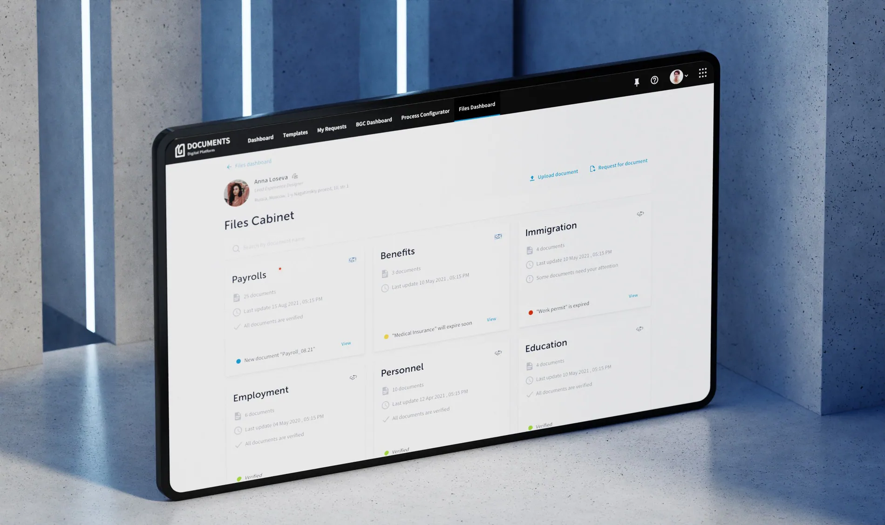
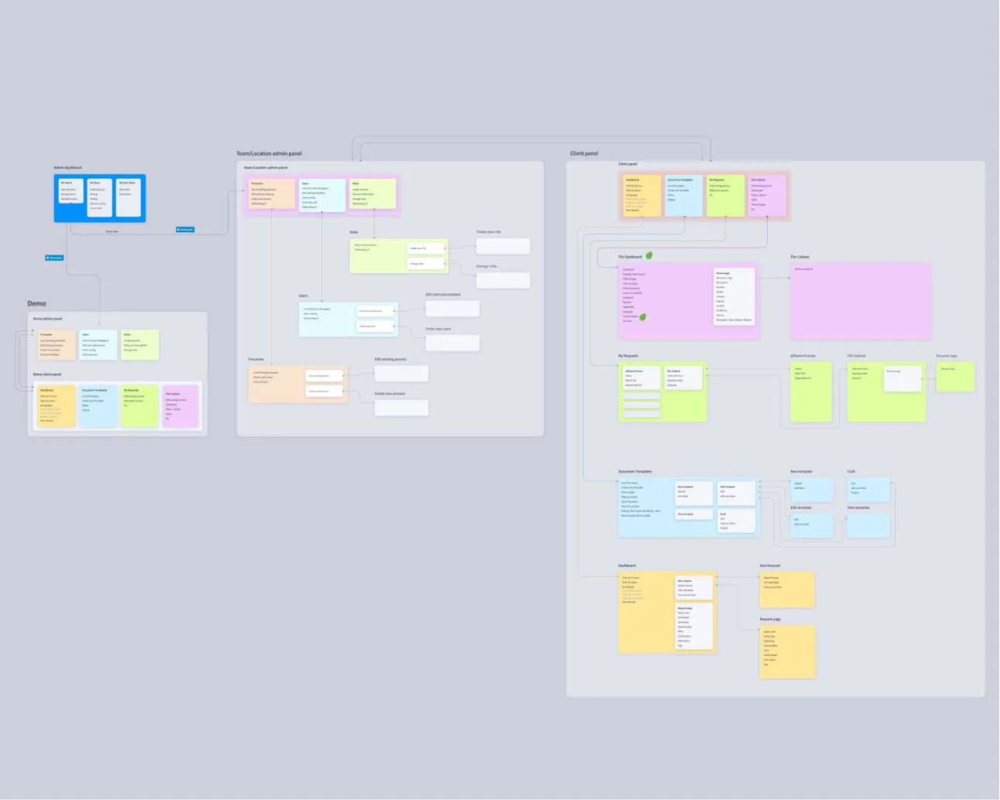
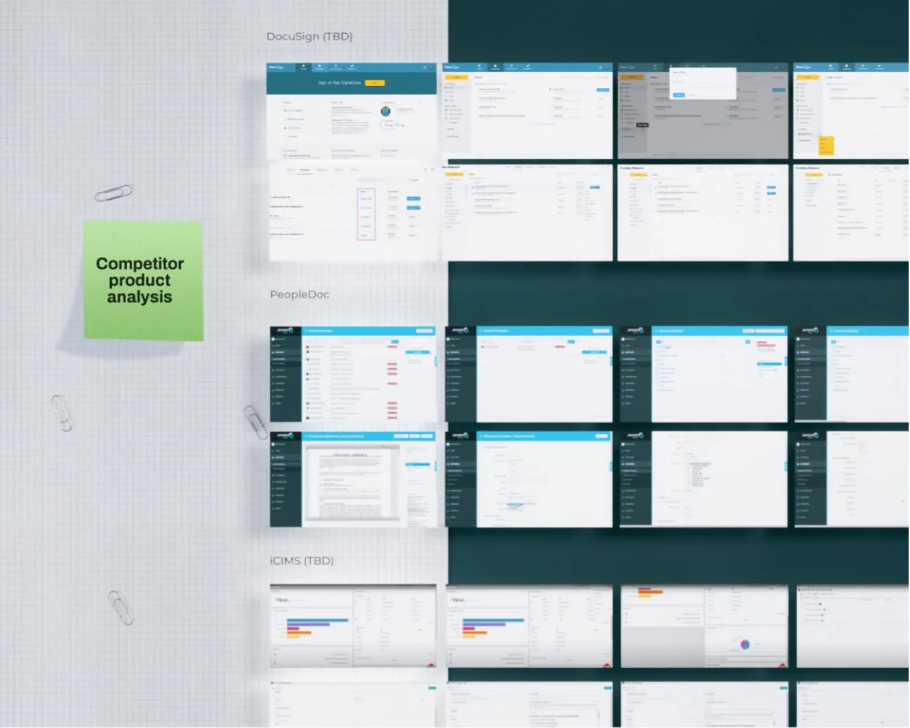
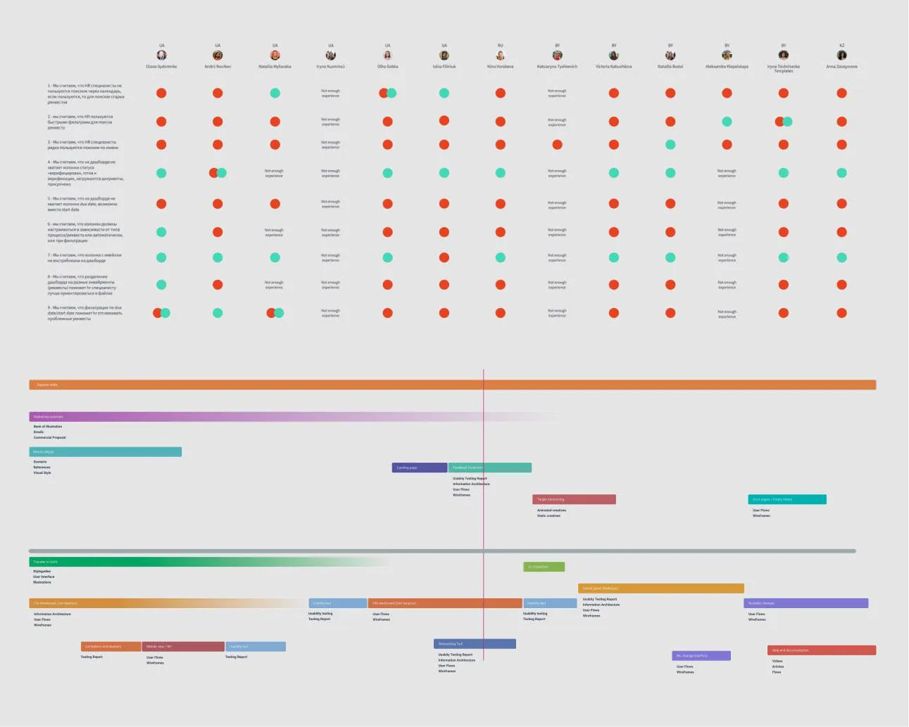
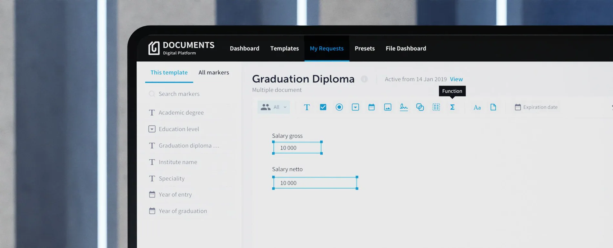
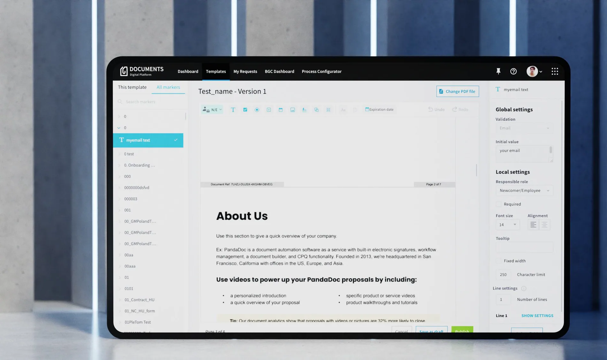

EPAM Documents
Workflows that work across borders.
SCROLL TO EXPLORE
International scale begins with local differences.
An HR document platform needed adaptable workflows that could travel across countries, onboarding practices and teams.
- Project
- EPAM Documents
- Role / disciplines
- Product design / SaaS platforms
- Period
- 2020 — 2021
Documents are the product. Complexity is the problem.
The SaaS platform helped HR teams manage onboarding requests, background checks, document collection and auto-filled forms.

The brief combined two objectives: improve the current user experience and explore how the product could support new regions with different document and hiring practices.€
The product needed flexible workflows rather than one universal form.
Audit first. Redesign second.
I investigated where new users struggled and which tasks mattered most to HR teams.


The discovery work combined a product UX audit, Google Analytics, stakeholder kickoff sessions and investigation of country-specific document needs. I also explored OCR and potential solutions that could reduce manual document work.
Turn different requirements into one adaptable flow
A fixed workflow could not express every country' s steps, deadlines and responsibilities.


Product thinking beyond the interface
Preparing a SaaS product for expansion also meant explaining its value to different buyers and users.

I combined competitor research, user interviews and Value Proposition Canvas work with concepts for marketing materials. Employee-facing and business-facing stories were developed to communicate different parts of the value proposition.
Scalable SaaS is built around variation.
The most compelling evidence is the combination of decisions made, implementation, and observed changes.
* Figures reflect the period of work shown in the portfolio and may differ from the current situation.